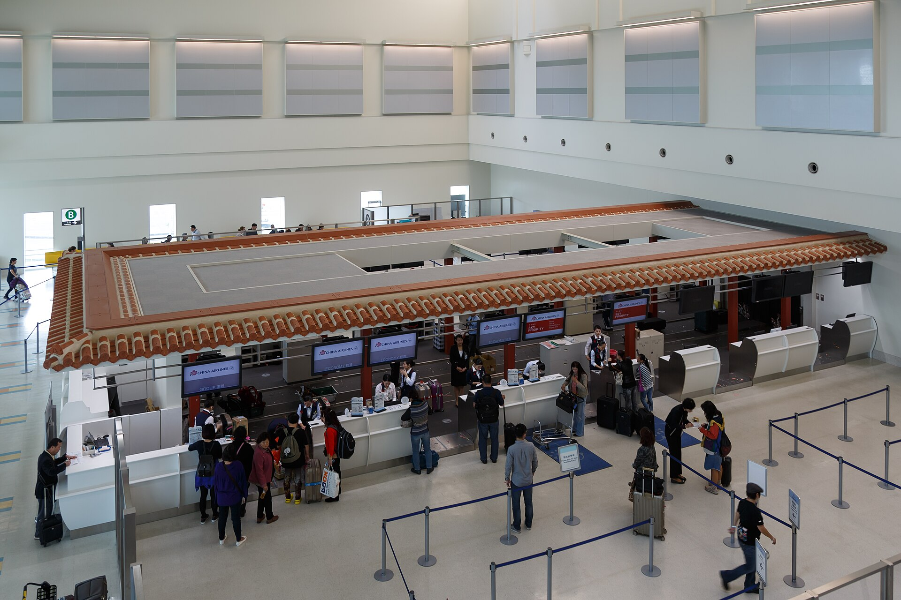
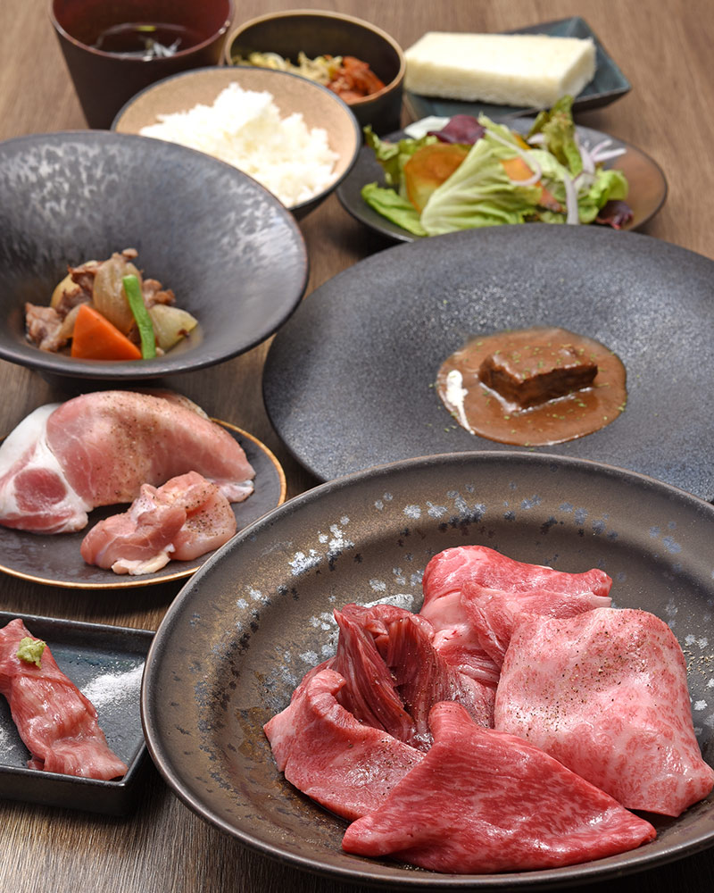
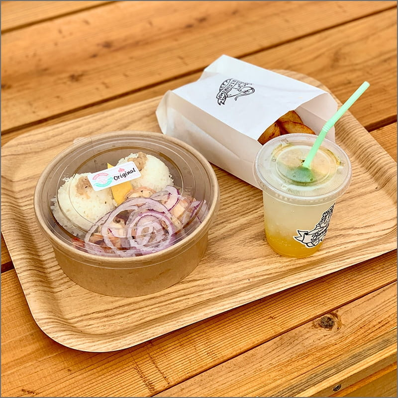
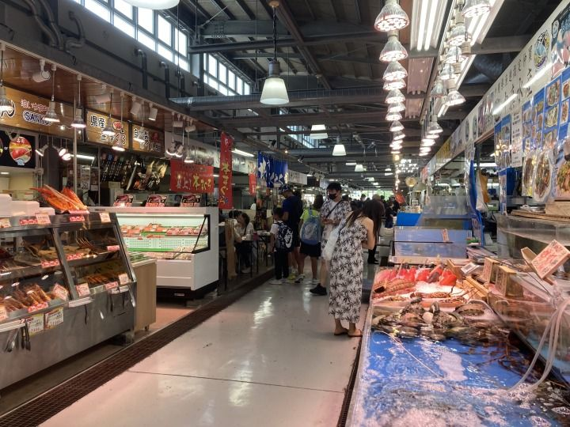

11/5（四）20:50
那霸機場降落。行李拿完後，建議直接計程車到飯店；想省錢才搭單軌到牧志站再走路。

SEPARATE FRIEND ROUTE
11/5 晚上抵達那霸後，先住 ALPHABED INN 那覇国際通りEAST；11/6 可以去古宇利島吃蝦蝦飯，下午或晚上再跟大家會合。
那霸機場降落。行李拿完後，建議直接計程車到飯店；想省錢才搭單軌到牧志站再走路。
ALPHABED INN 那覇国際通りEAST｜11/5–11/8 三晚。你們 11/6 到那霸後住同一棟，國際通、牧志市場都能步行。
11/6 下午若從古宇利回來得及，就在美國村會合；若選純公車版，就晚上回那霸會合。
ARRIVAL NIGHT



抓 30–50 分鐘拿行李、入境與走到交通區。若有托運，時間會比較浮。
那霸機場 → ALPHABED INN 那覇国際通りEAST。概抓 ¥1,800–2,500／車，深夜或塞車會浮動。
那霸機場站 → 牧志站，成人 ¥320；有大行李或下雨時，計程車會比較省力。
這間是自助入住型，先確認入住密碼、護照資料與房間資訊都在手機裡。
那霸國際通店與久茂地店晚餐公開時間都是 16:30–23:00，L.O. 22:15。若 21:55 前完成入住，可評估前往；若抵達時間較晚，改一蘭、Donki 或國際通宵夜較順。
KOURI SHRIMP ROUTE



這版適合想保留蝦蝦飯，又希望下午銜接美國村行程；交通費會高於純公車版。
這版費用較低、交通單純；會合時間改在傍晚那霸市區。
若 11/6 不安排古宇利島，可從那霸搭北谷直行巴士或計程車到美國村。東京巴士北谷直行成人 ¥1,000，計程車從國際通到美國村約 ¥3,200–4,500／車。
官方目前寫那霸國際通店、北谷店都是午餐休業，晚餐 16:30 開始。若想 11/6 吃琉球的牛，可改成 16:30 後北谷店早晚餐，或晚上回那霸吃那霸國際通／久茂地店。
WHERE TO MEET
15:00 左右較適合。景點範圍大、餐飲與商店多，若從古宇利搭計程車過來，可在 Depot Island／摩天輪附近會合。
開 Google 地圖 ↗若選純公車版，18:05 回到國際通入口，可直接回飯店或在國際通會合。
開飯店地圖 ↗SATURDAY + SUNDAY

若同車移動，可從魚市場開始銜接。若自行移動，建議以計程車連接主要停留點：飯店 → 泊いゆまち → 沖繩世界 → 奧武島 → PARCO → Kojima×BicCamera → 飯店。南部多點移動不建議全程使用公車。
退房後依自己的班機時間去那霸機場。若跟張家 MM925 類似時間，建議 10:45–11:15 到機場。單軌牧志站 → 那霸機場約 16 分鐘、¥320；計程車約 15–25 分鐘。
交通時間、票價與店家營業資訊更新於 2026/07/28。公車時刻會因道路、營運調整或滿席改變，出發前請再看官方頁；計程車費為抓行程用概估，實際依路況、車型、深夜加成與叫車方式變動。